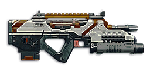

← Back to the NS-66 Punisher comparison
Sage Guide · Nanite Systems · All infantry classes · All factions
A 769 RPM SMG with a built-in grenade launcher and a class-synced underbarrel no other gun has. The aimed cone never changes — 0.30° standing, crouched, or strafing — so you can keep moving through the whole burst.
The one-line verdict: a 769 RPM SMG with the flattest aimed cone in this set — 0.30° in every stance, so strafing while aimed costs nothing — plus a built-in grenade launcher and a class-synced underbarrel no other gun has. It kills in 7 shots up close (468 ms) and stays honest to 75 m, where most SMGs have given up. The price is the middle damage model: 143 a bullet, and a 2.6-second empty reload.

The NS-66 Punisher · Nanite Systems · 25-round magazine · 1,000 certs / 799 DBC
Most new players die in a way they cannot explain: they ran in, aimed at an enemy, held the trigger — and hit nothing. It is not your aim. It is the cone. This gun fires inside a cone of spread that gets huge while you move and tiny when you stop and aim. Start a fight from the big cone and you miss shots you aimed perfectly. Start from the tiny one and the same fight is a kill.
Every fight starts the same way: stop, aim, then fire — in that order, every time. Release the sprint key and let your feet settle (about 0.3 s), press right mouse to aim down sights (about 0.15 s), then press the trigger. The order is the whole lesson: aiming first shrinks the cone to 0.30°, and from there the gun holds it. Skip a beat and the bullets go everywhere.
The other way to lose a fight you were winning is to hold the trigger down. Every shot adds 0.05° of bloom to the cone, and the cone only shrinks once you release the trigger and let it settle. A held trigger turns a 0.30° cone into a 0.80° cone in ten shots — and at that width the bullets miss the chest entirely. Fire in bursts of 5, release for a beat, fire again.
Four beats, left to right — the same mistake the cards above describe, drawn out.
1 · SprintingYour cone starts maxed at 7.0° — the widest it can ever be.
2 · Trigger heldFiring from the hip while running — every shot adds bloom.
3 · ADS, mid-holdThe sight looks precise — but aiming down sights does not reset bloom.
4 · The sprayBullets fly out of the wide cone you built. The enemy walks away.
Same fight, done right. Each beat has a job, and the order is the whole lesson.
1 · StopLet go of sprint (and the trigger). About 0.3 s for the gun to settle.
2 · AimPress ADS and let the sight come up (~0.15 s).
3 · FireNow fire — from the aimed cone. First shots land where the dot points.
The exception — under ~8 m, skip the whole danceHipfire works, no ADS needed, and stopping is optional. Keep moving, strafe, and let the hipfire ring do the work.
This gun's aimed cone is 0.30° in every stance — standing, crouched, strafing, it never changes. The problem is never the gun; it is the 7.0° cone you start in when you sprint. The gap between those two numbers is the whole lesson: stop first, and the gun does the rest. And once the sight is up, you can keep moving — strafing while aimed costs nothing on this gun, so the stop is only for the sprint, not for the fight.
Every enemy infantry has 1,000 health (500 shield + 500 health). Your bullet does 143 damage up close, fading to 84 at long range. Headshots count double, leg shots count less (×0.9). That gives you three numbers worth memorising:
| Range | Damage per bullet | Headshots | Chest shots | Leg shots | vs Heavy overshield (chest) |
|---|---|---|---|---|---|
| Close · 0–8 m | 143 | 4 | 7 | 8 | 11 |
| Mid · 8–28 m | 143→125 | 4 | 8 | 9 | 12 |
| Far · 28–75 m+ | 125→84 | 6 | 12 | 14 | 18 |
Perfect-accuracy times to kill: 4 headshots ≈ 0.23 s, 7 chest shots ≈ 0.47 s up close. In a real fight you will miss — count on it, and count your bullets.
Full power to 8 m, then a steady slide to 125 at 28 m, 100 at 56 m and 84 at 75 m. The gold line shows Soft Point Ammunition, which stretches full power to 13 m.
Move the slider to a distance and see what the fight demands there. The table answers the question you actually ask mid-fight: how many hits do I need, and how long will they take?
Aim: hipfire. Move: strafe (A/D) the whole fight.
Inside 8 m the enemy is big enough to fill your hip cone — 0.14 m standing, 0.21 m moving. Strafe side to side while firing and let your 769 RPM do the talking. Don't aim down sights here — the sight picture slows you down more than it helps.
Aim: ADS, chest. Move: strafe through the burst.
Full or near-full damage, 769 RPM, 8 shots to kill in 546 ms. Your aimed cone is 0.30° whether you stand or strafe, so keep moving — 4 head hits end the fight in 234 ms. This is where you win most of your fights.
Aim: ADS, chest. Move: strafe between bursts, plant during them.
Damage is sliding from 125 toward 100, and the cone grows 0.05° with every shot. Fire in bursts of 5, release, re-aim, fire again. Nine to ten shots kill here — crouch or stand still when you can, though strafing costs nothing on this gun.
Aim: ADS, chest. Move: still or crouched. Fire: single taps, one shot at a time.
At 84–100 damage you need 11–12 chest shots to kill, and each miss costs you 78 ms. Take these shots at stationary or fleeing targets only. Otherwise, close the distance behind cover — or fit High Velocity Ammo, which holds minimum damage to 95 m.
The cone — the spread your bullets land inside — depends on what your body is doing. Your first shots are always the most accurate. Every shot after the first makes the cone bigger, by a fixed amount, until you stop firing and let it settle.
| Stance | Starting cone | What it means |
|---|---|---|
| Aimed (ADS), standing still | 0.30° | Your best accuracy — and it never gets better than this. Plant your feet and every bullet goes where the crosshair is. |
| Aimed (ADS), crouched | 0.30° | Same cone as standing, but you are a smaller target and the rifle is steadier — use it behind cover. |
| Aimed (ADS), strafing | 0.30° | The same cone as standing still — strafing while aimed costs nothing at all, and you move at three-quarter speed (0.75×). Strafe through the whole burst. |
| Hipfire, standing still | 1.0° | Fine up close (under ~8 m). Past that, bullets start missing the chest. |
| Hipfire, crouched | 1.0° | Same cone as standing hipfire — crouching does not tighten it on this gun. |
| Hipfire, moving | 1.5° | The loosest cone you should ever fire from. Only inside ~5 m, only because the enemy is that close. |
One more number worth knowing: your ADAD window is 0 aimed shots (10 from the hip). Your aimed cone is 0.30° in every stance — standing, crouched, strafing, it never changes — so strafing while aimed costs nothing at all: the cone is already at the moving floor. From the hip you get 10 free still shots: your first 10 hipfire shots are the window — after 10 shots your cone has grown to 1.50°, exactly the 1.50° moving minimum, so starting to strafe then costs nothing. The cone still grows during those 10 shots; the window is about the switch to moving, not about bloom pausing. (This is the Ideal ADAD rhythm: 0 free still shots aimed, then move.)
One more number: the first-shot kick is 2× — your opening shot jumps 0.7° (0.35° × 2) before the burst settles. Aim the first shot at the chest, where the jump still lands, and let the burst settle onto the head.
| Mode | When | How |
|---|---|---|
| Mag dump | Under ~8 m, hipfire | Hold the trigger and ride the recoil down. Past ~8 rounds you are spraying — and the 25-round mag is gone in 1.9 seconds. |
| Burst of 5 | 8–56 m, aimed | Fire 5, release for a beat (~0.15 s), fire 5 again. This is your default. Each release resets the cone, so every burst starts at 0.30°. |
| Tap-fire (1 shot) | 56 m+, aimed | One click, one shot, re-aim. Slow, but every bullet has a chance to hit. At this range a missed shot is worse than a slow one. |
Hold FIRE and watch the target. The cone grows with every shot — that is bloom, 0.05° per bullet aimed. Short bursts keep it small; holding the trigger makes the target a blur. Release for a beat and it shrinks back. This is the whole game, in one window.
Simulation: 769 RPM, 0.30° starting cone, 0.05° bloom per shot, target at 30 m. The simulator is a teaching aid — it uses the same numbers as the tables above, but it does not model recoil climbing the sights off target.
Three pictures carry most of this guide. The first shows how big your hipfire spread really is. The second shows the rhythm to fire in. The third shows the two sights you will actually buy.
The circles are drawn to scale against a 1.8 m soldier at 8 m. The red ring is your hipfire cone while moving — 0.21 m wide. The blue ring is the cone standing still, 0.14 m. The gold ring is the cone with a Laser Sight, 0.09 m. Aimed, the cone is 0.04 m across: a dot.
Read it this way: standing still, the 0.14 m ring sits well inside the chest — at 8 m your hipfire is honest. Moving, the 0.21 m ring still covers the chest. With a laser sight the ring shrinks to 0.09 m, comfortably inside the chest. That is the whole case for the laser sight, in one picture.
The rhythm: fire in bursts, let the cone shrink, fire again. Never hold the trigger through the whole magazine.
Read it this way: the target pattern is bursts of about 5 rounds — the ideal burst length. Short bursts keep your cone near 0.30°; a held trigger lets bloom (0.05° per shot aimed, 0.05° from the hip) push it past the size of the target. The 0.15-second pause costs almost nothing in kill time and buys back all of your accuracy.
A clean 1x reflex sight. Wide view, fast target finding.
Best for: indoors, point holds, tracking a moving enemy at close range.
Your first purchase. Twice the size, same sight picture.
Best for: open ground, 28–56 m fights, landing headshots.
That's the whole 30-cert decision from section 06 in one picture: 1x for awareness, 2x for precision. Most veterans carry both and swap per base — indoors 1x, open ground 2x.
Every attachment slot has a job. The ratings below are for this gun, for a new player — a 'good' attachment is one that helps you in fights you actually take. The Punisher costs 1,000 certs (or 799 DBC) before you spend a single cert on attachments — every cert below stays on this gun. The grenade launcher is built in, so it never appears in the lists below.
Highlights warm bodies through smoke and darkness, out to ~80 m.
A clean 1x reflex sight with a clear centre dot. Wide view, fast target finding.
A 2x scope. The enemy is twice as big in your sight picture — headshots at 28–56 m become far easier.
A 3.4x scope. More zoom than this SMG wants.
Cuts vertical recoil by 30% (0.35° becomes 0.25° per shot). Your hipfire cone grows 15% and enemies see you on the minimap from 35 m further away.
Hides the muzzle flash only — no change to the gun's handling. It does make you visible on the minimap from 15 m further away.
No muzzle flash, no minimap signature. But your bullets fly 15% slower (350 → 298 m/s) and damage falls off sooner.
Swaps your underbarrel to match your class: EMP grenade (Infiltrator), Impulse grenade (Light Assault), Enhancement grenade (Engineer), Havoc grenade (Heavy Assault), Cleanse grenade (Combat Medic). It works alongside the grenade launcher and alongside a second rail attachment — the only weapon in the game that lets you run an underbarrel and a laser sight at the same time.
Reveals cloaked infiltrators in a short cone. It does not change your damage, recoil, or cone in any way.
5 extra rounds per magazine (25 → 30). Cost: the weapon takes 15% longer to raise and lower (0.65 s → 0.75 s).
Tightens the hipfire cone by a third (1.0° becomes 0.67° standing still — about 0.09 m of spread at 8 m instead of 0.14 m).
Full 143 damage now reaches to 13 m instead of 8 m. Cost: bullets fly 10% slower (350 → 315 m/s), so lead moving targets a touch more.
Bullets fly 10% faster (350 → 385 m/s) and minimum damage now holds to 95 m instead of 75 m — but full damage ends 2 m sooner (8 m becomes 6 m).
The Punisher ships with a frag grenade launcher under the barrel — no certs, no slot, always there. 400 direct damage, 350 indirect within 0.5 m, falling to 50 at 3 m. One round, a 3-second reload, 20 RPM, and a slow 40 m/s lob you can watch fly. It arms immediately, so it can hurt you at your own feet. Switch to it with the Gear Slot 1 key, fire, and switch back — it is an opener for flushing a room, not a finisher for duels.
Four ready builds. The first costs nothing. The second is the one to aim for. The other two are for specific jobs.
Perfectly usable. The Punisher needs no attachments to kill — it needs the three beats from section 01 and bursts of 5. The grenade launcher is already there. Play this until you have 30 certs.
The build this guide is written around. 2x sight for headshots, the class underbarrel for your class's grenade, and a laser for the hipfire fights. Good at every range an SMG fights at — and the only build in the game with an underbarrel and a laser at the same time.
For bio labs and capture points. Your class grenade for the room, the 1x sight for the doorway, and the laser can wait — indoors, the hipfire cone is already tight enough.
For flanking alone. No minimap signature, no muzzle flash, 30 rounds per magazine, and the grenade launcher still built in. Accept the slow bullets (298 m/s) — you are shooting people who don't know you're there.
Killing fast is not about flicking. It is about a short list of habits, done the same way every fight.
Your aimed cone is 0.30° standing, crouched, or strafing — the only gun in this set where movement is free. Strafe through the whole burst; the cone never widens for it. Section 01's stop still matters for the sprint cone, but once the sight is up, move.
A frag into the room before you push does 400 direct damage and scatters everyone inside — then you walk in with the SMG while they are still reacting. Firing it mid-duel costs you the 3-second reload and the fight.
Five rounds, release for a beat, five more. The cone resets between bursts, so every burst starts at 0.30°. Holding the trigger through the magazine is how you lose fights you were winning.
Your reload is 2.3 s with rounds left, 2.6 s on empty — the longest in this set. Reload after every kill, behind cover. Never start a fight on 6 rounds.
4 headshots kill in 0.23 s; 7 chest shots take 0.47 s. That is twice as fast. Aim at the head, and the chest hits you land on the way still count — a mix of 1 headshot + 5 chest shots kills in 6 shots, faster than 7 chest alone.
Your bullets travel at 350 m/s — a target at 50 m needs about 0.14 s of travel. At 25 m+ aim a body-width ahead of a running enemy, and a little more with Soft Point (315 m/s) — or fit High Velocity Ammo (385 m/s) for open-field fights.
Every gun has a price. The Punisher's price is the middle: 143 damage, a grenade launcher that demands its own skill, and the longest reload in this set. Here is the full list, with the counter-habit for each.
Seven shots to kill up close, where the Tengu needs five pulls. The Punisher is neither the fastest nor the hardest hitter; it wins on the cone and the underbarrel, not the damage model.
Counter: Don't take fair trades on damage alone. Shoot first (peek from cover), shoot the head (4 headshots take 0.23 s), or open with the grenade launcher.
One round, a 3-second reload, and a 40 m/s lob that takes half a second to reach 20 m. Fire it at the wrong moment and you are standing in the open with an empty tube.
Counter: Use it to open a room, never to finish a duel. Switch back to the SMG the instant it leaves the barrel.
Minimum damage is 84, and it only arrives at 75 m — the longest falloff in this set. Past 56 m you need 11–12 shots to kill, and each one takes 78 ms.
Counter: Close the distance behind cover, or fit High Velocity Ammo (385 m/s, minimum damage to 95 m). Don't trade at 60 m against a gun that kills faster than yours.
The recoil angle runs −20° to −16° — a steady sideways bias on top of the 0.35° climb, so the muzzle walks diagonally instead of straight up.
Counter: Pull your mouse gently down and across against the drift. The Compensator (100 certs) cuts the climb by 30% if the diagonal walk is what throws your aim.
2.6 s on empty, 2.3 s with rounds left. The PMG-200 reloads in 1.7 s; you do not.
Counter: Reload after every kill, and count your bursts — five bursts of 5 is the whole magazine. Extended Magazine (30 rounds) exists for exactly this problem.
VR Training (the warpgate terminal, free, no one shoots back) is where you build the habits. Forty-five minutes here saves you a week of dying to the same mistakes.